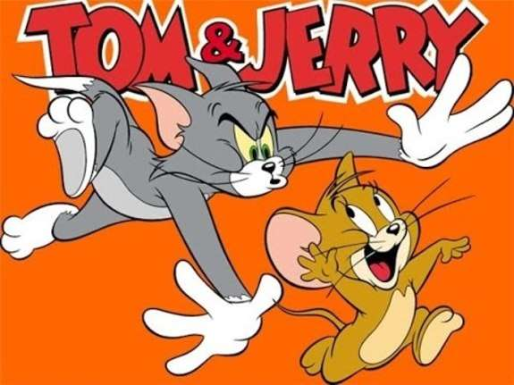
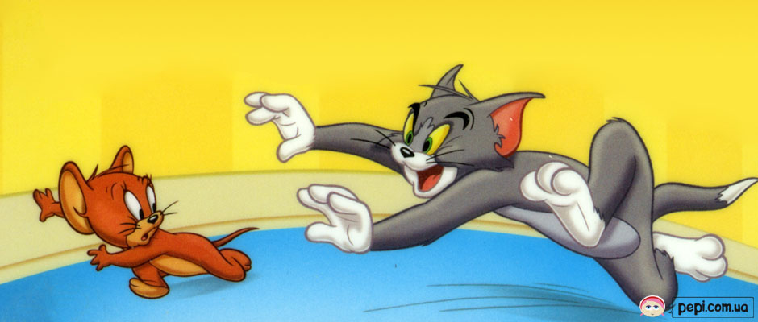
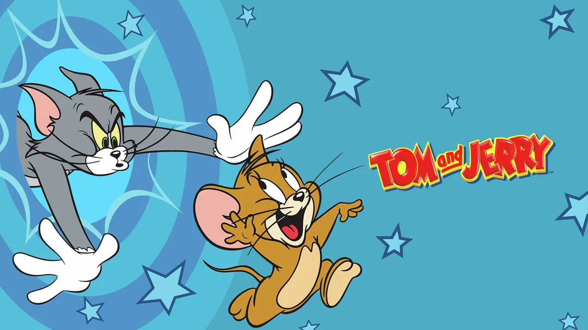

Том і Джері — це класичний американський мультсеріал, створений Вільямом Ханною та Джозефом Барберою у 1940-х роках. Він розповідає про нескінченну боротьбу між котом Томом та маленьким хитрим мишеням Джері. Мультфільм відомий своїм гумором, динамічними сценами переслідування та відсутністю довгих діалогів — більшість історій розкриваються через дії персонажів.
Том, великий сірий кіт, завжди намагається спіймати Джері, але його плани майже завжди обертаються проти нього самого. Він представляє типового “невдачливого переслідувача”, чия гордість і наполегливість часто приводять до комічних ситуацій.
Джері, навпаки, маленький і спритний мишеня, який завжди виходить переможцем. Його хитрість і винахідливість дозволяють уникати пасток та навіть підставляти Тома у кумедні ситуації. Джері часто допомагає іншим персонажам мультсеріалу, демонструючи свою доброту, незважаючи на бешкет.
Мультсеріал "Том і Джері" став культовим через поєднання гумору, музики та безслівної комедії. Його популярність зберігається десятиліттями, а персонажі залишаються впізнаваними для глядачів усього світу.

Попри постійні суперечки, Том і Джері не завжди вороги. У деяких серіях вони допомагають одне одному, коли з’являється спільна небезпека. Це показує, що навіть ті, хто часто сваряться, можуть бути друзями у важку хвилину
Мультфільм «Том і Джері» навчає глядачів винахідливості, наполегливості та доброти. Його історії сповнені гумору, пригод і тепла. Саме тому цей мультфільм залишається улюбленим уже багато поколінь.
Кожна серія мультфільму — це окрема історія, повна пригод, гумору та несподіваних поворотів. Глядач ніколи не знає, хто цього разу переможе — Том чи Джері. Саме це робить мультфільм цікавим і непередбачуваним.
Іноді між героями з’являється справжня дружба, особливо коли вони об’єднуються проти спільного ворога або допомагають одне одному. Такі моменти додають теплоти та показують, що навіть суперники можуть мати добре серце.
«Том і Джері» став не просто мультфільмом, а частиною світової культури. Він отримав багато нагород і продовжує надихати нові покоління. Цей мультфільм вчить, що у будь-яких ситуаціях варто залишатися добрим, розумним і не втрачати почуття гумору.

Мультфільм практично без слів, і всі емоції передаються через міміку, рухи і звук. Це робить його зрозумілим для глядачів будь-якого віку.
Сцени погонь та пасток — це основа гумору мультфільму. Том часто потрапляє у власні пастки, що викликає сміх у глядачів.
Джері, навпаки, завжди виходить переможцем, демонструючи свою кмітливість і спритність. Це робить сюжет динамічним і цікавим.

Мультфільм вчить глядачів винахідливості та кмітливості. Джері постійно шукає нестандартні рішення, щоб уникнути небезпеки
Том, незважаючи на свої поразки, завжди не здається. Його наполегливість показує, що потрібно намагатися навіть тоді, коли не виходить з першого разу

Кожна серія сповнена сміху та несподіваних ситуацій. Глядачі можуть навчитися цінувати гумор у повсякденному житті.
Мультфільм також демонструє важливість дружби та співпраці. Іноді навіть суперники можуть стати союзниками.